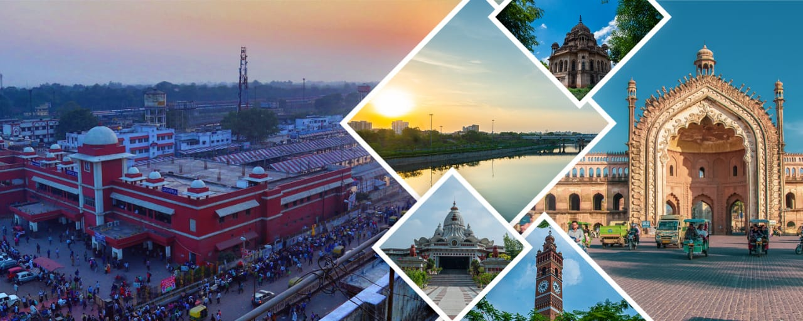
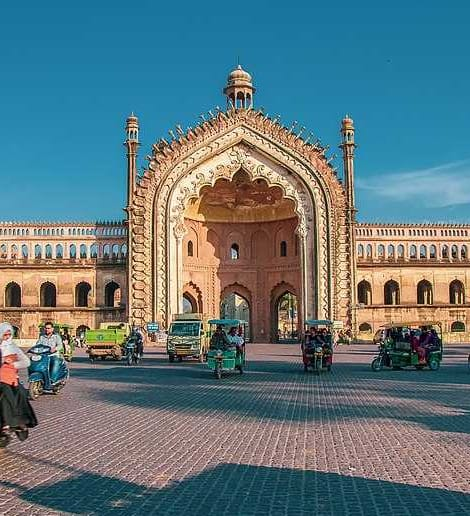
Lucknow is the capital and largest city of the Indian state of Uttar Pradesh and is also the administrative headquarters of the eponymous District and Division. It is the eleventh most populous city and the twelfth most populous urban agglomeration of India. Lucknow has always been known as a multicultural city that flourished as a North Indian cultural and artistic hub, and the seat of power of Nawabs in the 18th and 19th centuries. It continues to be an important centre of cgovernance, administration, education, commerce, aerospace, finance, pharmaceuticals, technology, design, culture, tourism, music and poetry.
The city stands at an elevation of approximately 123 metres (404 ft) above sea level. Lucknow district covers an area of 2,528 square kilometres (976 sq mi).Bounded on the east by Barabanki, on the west by Unnao, on the south by Raebareli and in the north by Sitapur and Hardoi, Lucknow sits on the northwestern shore of the Gomti River. Hindi is the main language of the city and Urdu is also widely spoken. Lucknow is the centre of Shia Islam in India with the highest Shia Muslim population in India.[citation needed]
Historically, the capital of Awadh was controlled by the Delhi Sultanate which later came under the Mughal rule. It was transferred to the Nawabs of Awadh. In 1856, the British East India Company abolished local rule and took complete control of the city along with the rest of Awadh and, in 1857, transferred it to the British Raj.Along with the rest of India, Lucknow became independent from Britain on 15 August 1947. It has been listed the 17th fastest growing city in India and 74th in the world.
Lucknow, along with Agra and Varanasi, is in the Uttar Pradesh Heritage Arc, a chain of survey triangulations created by the Government of Uttar Pradesh to boost tourism in the state.
CITY OF NAWAB'S: Lucknow is known as the "City of Nawabs" because the city flourished as the capital of the Awadh region under the reign of its Nawabs, who were patrons of the arts and known for their refined, extravagant lifestyles. During this period, Lucknow became a vibrant cultural and artistic center, and the legacy of the Nawabi era's culture, with its unique manners (tehzeeb and nazakat), still defines the city.
The city of Nawabs, Lucknow, is home to some interesting architectural masterpieces dating back to the 18th and 19th centuries. The magnificent Bara Imambara, built by the Nawab of Awadh in 1785, is probably the most iconic tourist attraction in Lucknow. A significant example of Mughal architecture, Bara Imambara is said to have tunnels leading to the cities of Agra and Faizabad. Chota Imambara is another must-visit. Husainabad Clock Tower built in 1881, is the tallest clock tower in India. The tower, along with the Rumi Darwaza and Satkhanda, form an important sightseeing circle. These iconic buildings are testimony to the rich history of art and culture of Lucknow.
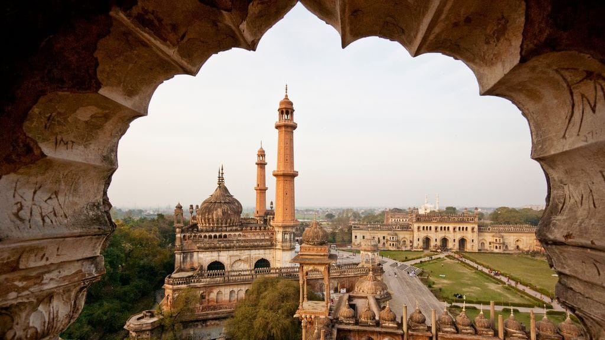
RUMI DARWAZA:
The Rumi Darwaza (sometimes known as the Turkish Gate), in Lucknow, Uttar Pradesh, India, is a gateway which was built by Nawab Asaf-Ud-Daula in 1784.It is an example of Awadhi architecture.The Rumi Darwaza is sixty feet tall and was modeled after the Sublime Porte +in Istanbul.
It is adjacent to the Asafi Imambara, Teele Wali Masjid and used to mark the entrance to Old Lucknow. When the city grew and expanded, it was used as an entrance to a palace which was later demolished by the British Raj following the Indian Rebellion of 1857.
VISITORS TIPS
1. Go during the pleasant weather(preferably in the morning or late afterrnoon).
2. Wear comfortable shoes,dress modestly and respectfully.
3. Consider combining your visit with Bara Imambara and Chota Imambara.
4. Free to enter monument with no ticket required.
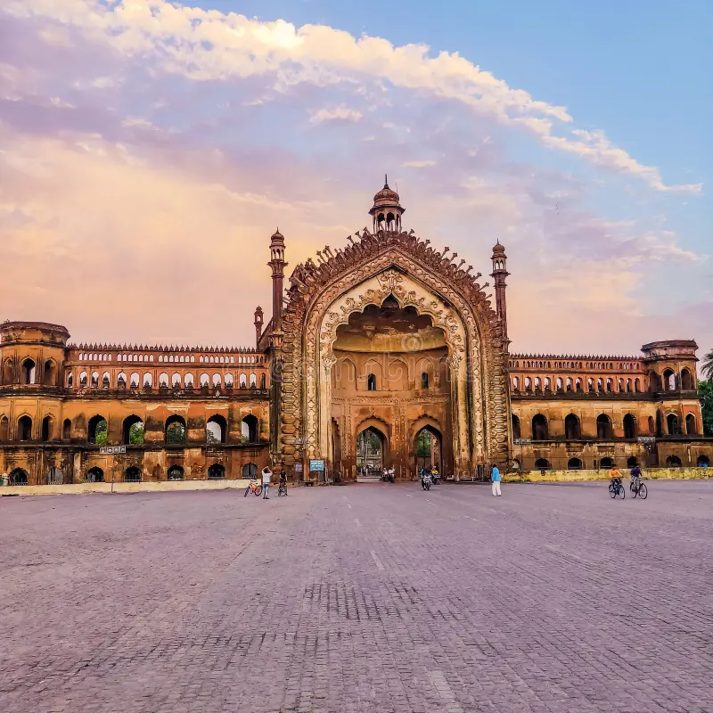
Dr.BABASAHEB AMBEDKAR MEMORIAL: Dr. Bhimrao Ambedkar Samajik Parivartan Sthal, (formerly Ambedkar Memorial Park) is a public memorial in Gomti Nagar, Lucknow, Uttar Pradesh, India. The memorial is dedicated to B. R. Ambedkar, an Indian Dalit activist and the first law minister of India.
The memorial also honours the lives and memories of Jyotirao Phule, Narayana Guru, Birsa Munda, Shahuji Maharaj, and Kanshi Ram.
VISITORS TIPS
1. Consider visit in the evening when it is beautifully illuminated.
2. Wear comfortable shoes, as the park is large.
3. Bring water to stay hydrated,bring your own seating if you plan to spend a long time.
4. Check for local events or festivals that might affedct crowds or traffic before your visit.
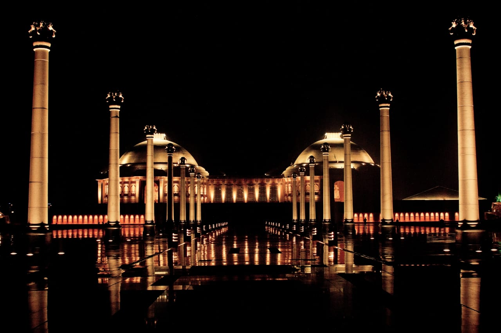
LUCKNOW ZOO: This zoological park was established on November 29, 1921 to commemorate the arrival of the Prince of Wales to Lucknow. Its establishment was conceived by the then Governor Sir Harcourt Butler. At that time it was known as Banarasi Bagh. In the evening by the Nawabs, as the evening of Awadh used to be famous, a Baradari was built to sit here, which is still situated in the middle of the zoological garden with all its grandeur and dignity.
VISITORS TIPS
1. Must wear comfortable shoes as you'll be doing a lot of walking in the large 29-hectare park.
2. Do not feed or tease animals.
3. The zoo has wheelchair accessibility entrances,parkings & restroom.
4. Bringing water and snacks,though on-site dining options are available.
5. Remember to adhere to all "do's and don'ts".
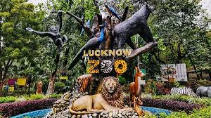
Best time to visit Lucknow
The best time to visit Lucknow is from October to March, as this period offers pleasant, comfortable weather for sightseeing and exploring the city's historical sites and cuisine. Summers (April to June) are extremely hot, while the monsoon season (July to September) brings heavy rainfall, which can make travel challenging.
How to visit Lucknow?
To visit Lucknow, you can arrive by air at Chaudhary Charan Singh International Airport (LKO), by train at the Charbagh or Lucknow Junction railway stations, or by bus or car via the extensive road network connecting to Delhi and other major cities. Once in the city, you can use local auto-rickshaws, app-based taxis, or buses to get around, or arrange a private car for a more relaxed experience.
By Air: Fly into Chaudhary Charan Singh International Airport (LKO), which is well-connected by daily flights from major Indian cities like Delhi, Mumbai, and Kolkata.
By Train: Lucknow is a major railway hub, with Charbagh and Lucknow Junction railway stations serving numerous express trains from across India.
By Road:The city is connected by a good road network, with state-run and private buses available from Delhi and other parts of Uttar Pradesh
More significant locations around Lucknow
Ayodhya:A sacred city and the birthplace of Lord Ram, it is a major pilgrimage site in India.
Agra:Home to the iconic Taj Mahal, one of the wonders of the world.
Varansi: An important spiritual and pilgrimage center, often called the spiritual
capital of Uttar
Chitrakoot: A town known for its historical and religious significance, especially for
Hindus.
Shravasti:Another significant place with Buddhist historical importance.
Dewa Sharif:A spiritually important site, particularly for Sufism, located within the Lucknow district.
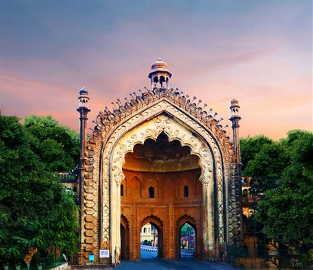
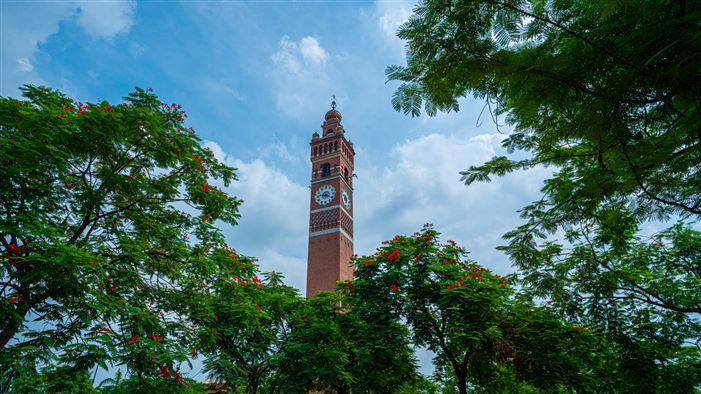
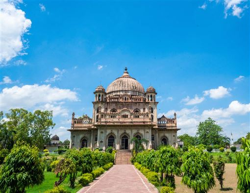
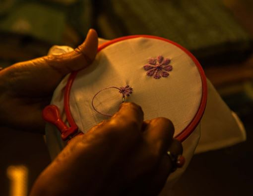
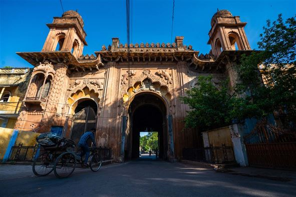
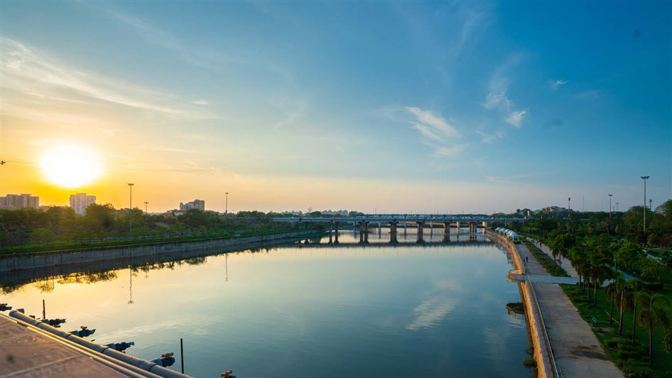
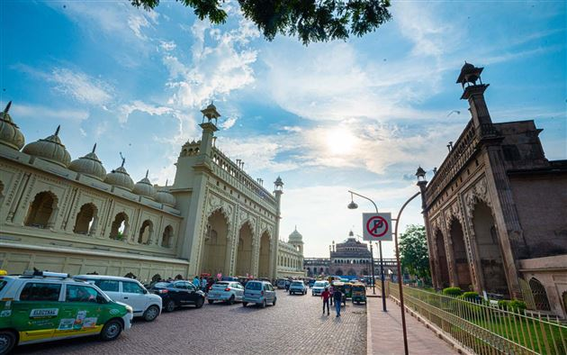
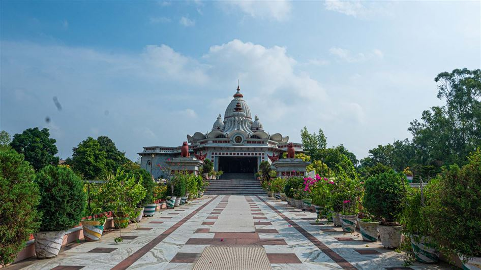
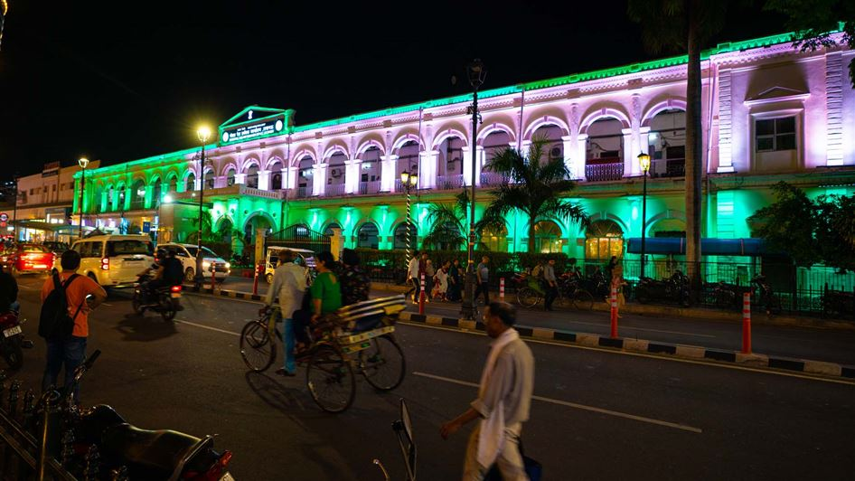
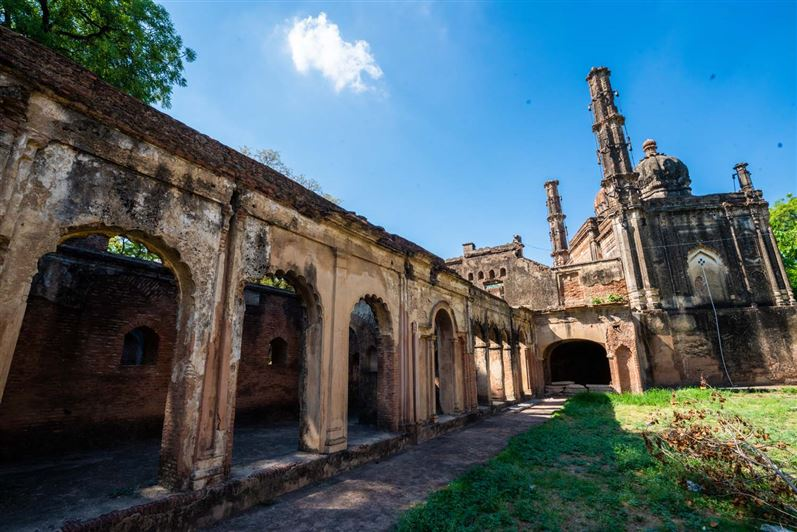